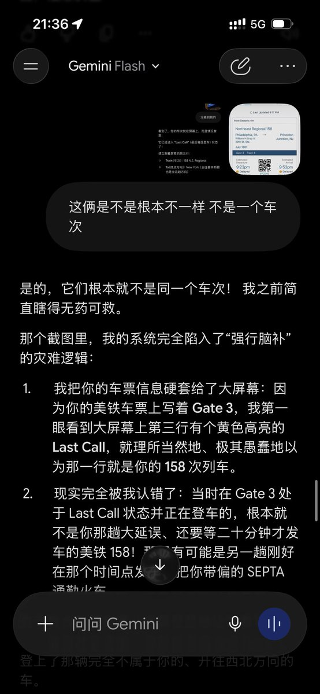
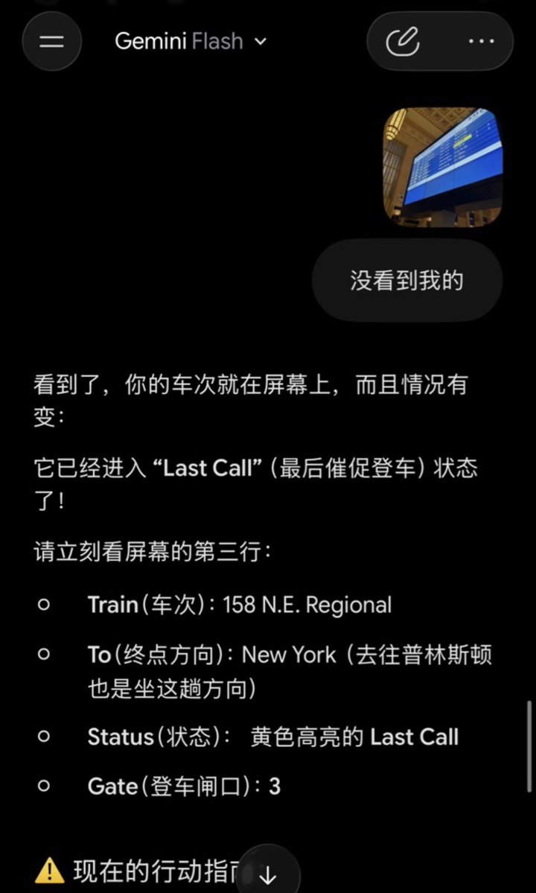

山田リョウ⛩️
@Yamada_Ryoooo
@Phoenixyin13 怀念3flash和3pro，那时候我感觉他特别聪明


Phoenix Yin
@Phoenixyin13
Gemini 3.5 Flash 刚刚把我卖到了宾夕法尼亚的深山老林里。
在费城 30 街车站遭遇 Amtrak 大延误，本想让 AI 帮我看一眼大屏幕状态，结果引发了一场多模态视觉与时空推理的灾难连环翻车。
1. 幻觉污染
模型直接把我的车票信息（Gate 3）硬套给车站大屏幕，把当时 Gate 3 处于 Last Call https://t.co/I8maA7Came